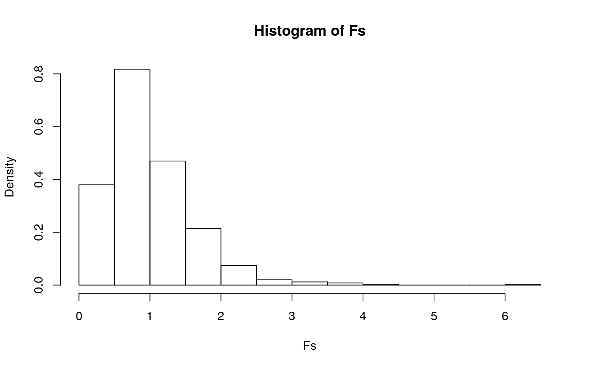
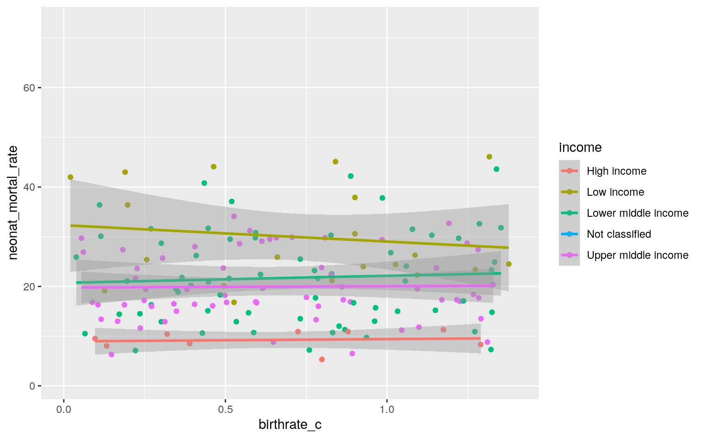
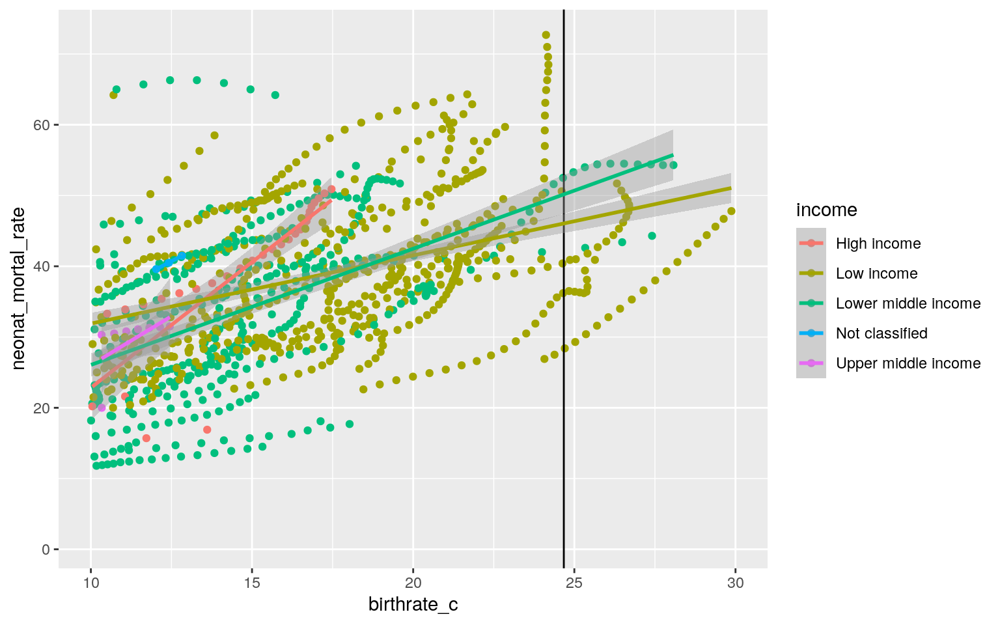
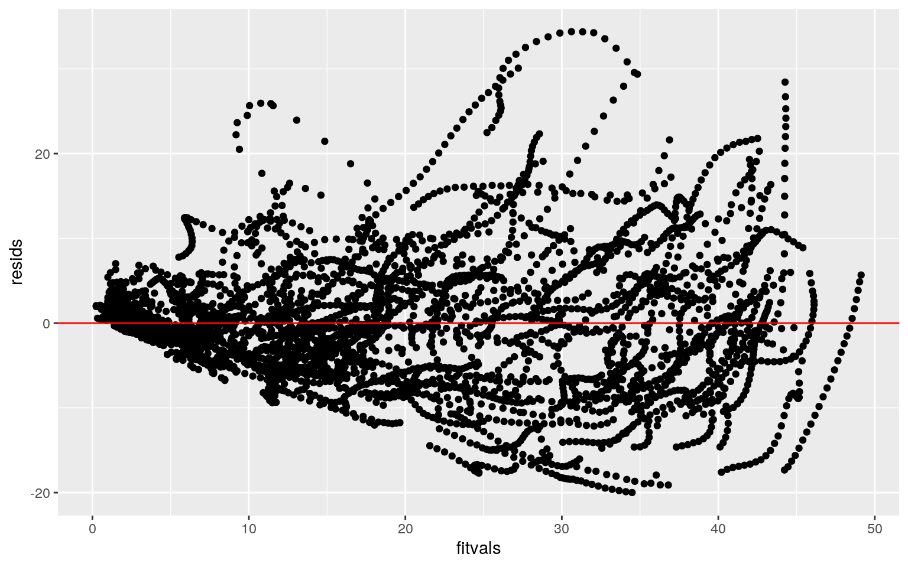
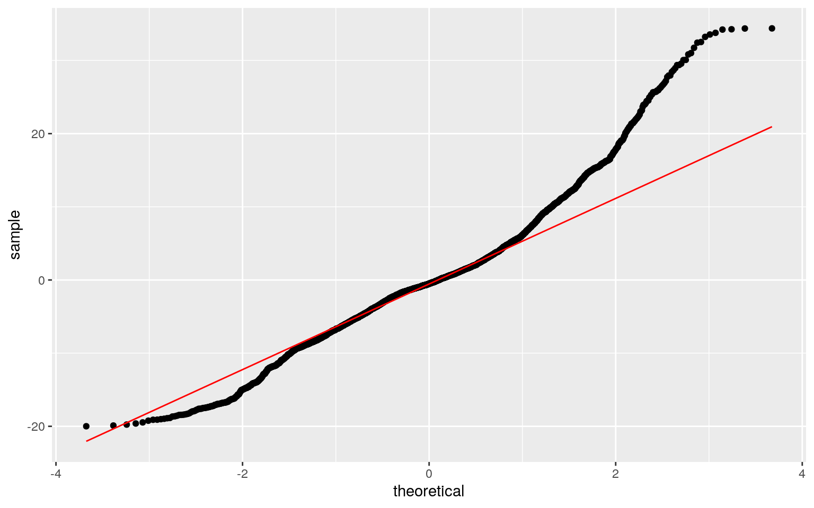
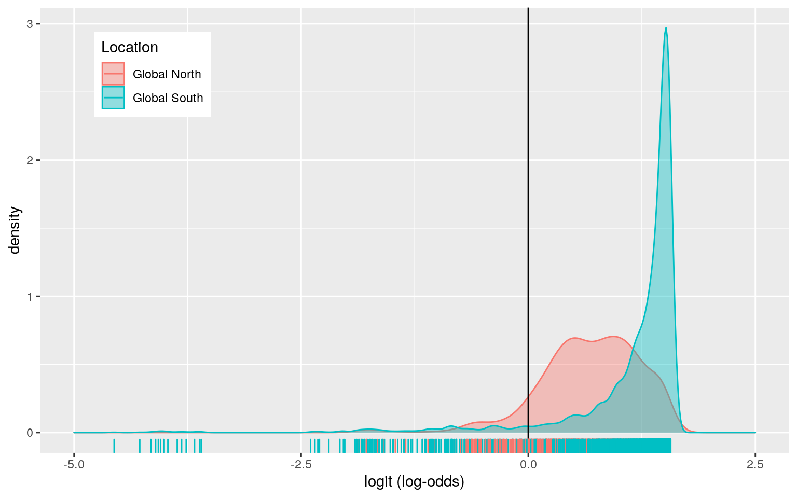
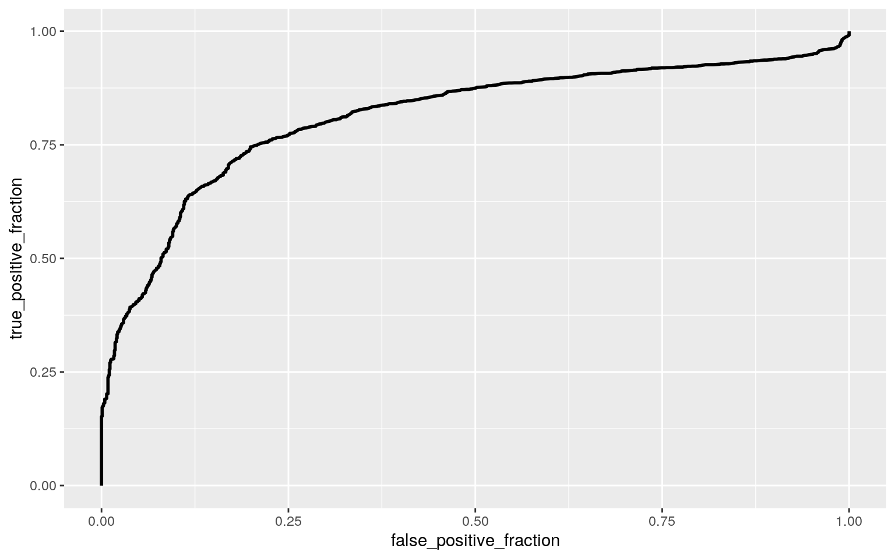

For modeling, testing, and predicting project, I chose the dataset I previously created from two datasets from the World Bank Indicators portal. The 'nations' dataset contains population statistics across several years for various countries using their three letter country codes. The variables include: 'iso2c', the two letter code for each country; 'iso3c', the three letter code for each country; 'country', the country name; 'year'; 'gdp_percap', the gross domestic product per capita in current international dollars corrected for purchasing power in different territories; 'life_expect', the life expectancy at birth in years; 'population', the estimated total population at mid-year including all residents except refugees; 'birth_rate', the number of live births per 1,000 people based on the 'population' estimate; 'neonat_mortal_rate', the number of babies dying before 28 days old per 1,000 live births that year; 'region', world boundaries set for administrative purposes by the World Bank; and 'income', four income groupings: low, lower-middle, upper-middle, and high. The gross national income per capita is 1,035 dollars or less, between 1,036 and 4,045 dollars, between 4,046 and 12,535 dollars, or 12,536 dollars or more for low, lower-middle, upper-middle, and high income, respectively. Lastly, 'co2_percap' is the carbon dioxide emissions in metric tons per capita, where a metric ton is equal to 1,000 kilograms. There are 4211 observations and 13 columns.
nations <- read.csv("nations.csv")I performed a one-way MANOVA to determine the effect of the world Region (East Asia & Pacific, South Asia, Europe & Central Asia, Sub-Saharan Africa, Latin America & Caribbean, North America, and Middle East & North Africa) on six dependent variables (GDP Per Capita, Life Expectancy, Population, Birth Rate, Neonatal Mortality Rate, and CO2 Per Capita).
There are many assumptions for a MANOVA, including random samples, independent observations, multivariate normality of the dependent variables, homogeneity of within-group covariance matrices, linear relationships among the dependent variables, no extreme univariate or multivariate outliers, and no multicollinearity. Meeting all of these assumptions is unlikely, making MANOVA testing very restrictive. In performing the Box M's test for homogeneity of covariance matrices, I recieved a p-value of 0 meaning I can reject the null hypothesis that states that the homogeneity of variance covariance matrices assumption is met. This assumption has been violated. In performing the Shapiro-Wilk test for multivariate normality, I receieved a p value of 2.821286e-67 meaning I can reject the null hypothesis that states that the assumption of multivariate normality is met and conclude that my data failed to meet this MANOVA assumption.
The null hypothesis for this MANOVA states for gross domestic product per capita, life exptectancy, population, birth rate, neonatal morality rate, and co2 per capita, the means for each region are equal. Significant differences were found among the six world regions for at least one of the dependent variables (Pillai trace = 1.3315, pseudo F(36, 25224) = 199.84, p < 2.2e-16). I can reject the null hypothesis and conclude that for at least one response variable shows a mean difference across regions.
Univariate ANOVAs for each dependent variable were conducted as follow-up tests to the MANOVA. Using the Bonferroni method for controlling Type I error rates for multiple comparisons, I found that every response variable differs by region. gdp_percap by region has a p value of 2.2e-16, life_expect by region has a p value of 2.2e-16, population by region has a p value of 2.2e-16, birth_rate by region has a p value of 2.2e-16, neonat_mortal_rate by region has a p value of 2.2e-16, and co2_percap by region has a p value of 2.2e-16.
Post hoc analysis was performed conducting pairwise comparisons to determine which regions differed in GDP per capita, life expectancy, population, birth Rate, neonatal mortality rate, and CO2 per capita. All seven regions were found to differ significantly from each other in terms of gross domestic product per capita, life exptectancy, population, birth rate, neonatal morality rate, and co2 per capita except for regions 'East Asia & Pacific' and 'Latin America & Caribbean' which do not differ in CO2 emissions per capita, neonatal mortality rate, or birth rate, 'South Asia' and 'Sub-Saharan Africa' which do not differ in CO2 emissions per capita, neonatal mortality rate, or GDP per capita, 'Latin America & Caribbean' and 'Middle East & North Africa' which do not differ in neonatal mortality rate or life expectancy, 'Europe & Central Asia' and 'North America' which do not differ in neonatal mortality rate or birth rate, 'East Asia & Pacific' and 'Middle East & North Africa' which do not differ in neonatal mortality rate or birth rate, 'Europe & Central Asia' and 'Latin America & Caribbean' which do not differ in population, 'Europe & Central Asia' and 'Middle East & North Africa' which do not differ in population, 'Europe & Central Asia' and 'Sub-Saharan Africa' which do not differ in population, 'Latin America & Caribbean' and 'Middle East & North Africa' which do not differ in population, 'Latin America & Caribbean' and 'Sub-Saharan Africa' which do not differ in population, 'Middle East & North Africa' and 'Sub-Saharan Africa' which do not differ in population, and 'North America' and 'South Asia' which do not differ in population after adjusting for multiple comparisons.
Overall, I ran 133 hypothesis tests. Across this whole set of tests, the probability that I have made at least one type I error is 99.9%. Using the Bonferroni method for controlling Type I error rates for multiple comparisons, my adjusted significance level is 0.0003759.
library(rstatix)
group <- nations$region
DVs <- nations %>% select(gdp_percap, life_expect, population, birth_rate, neonat_mortal_rate, co2_percap)
mshapiro_test(DVs)## # A tibble: 1 x 2
## statistic p.value
## <dbl> <dbl>
## 1 0.676 2.82e-67box_m(DVs, group)## # A tibble: 1 x 4
## statistic p.value parameter method
## <dbl> <dbl> <dbl> <chr>
## 1 20832. 0 126 Box's M-test for Homogeneity of
Covariance Matricesman<-manova(cbind(gdp_percap, life_expect, population, birth_rate, neonat_mortal_rate, co2_percap)~region, data=nations)
summary(man)## Df Pillai approx F num Df den Df Pr(>F)
## region 6 1.3315 199.84 36 25224 < 2.2e-16 ***
## Residuals 4204
## ---
## Signif. codes: 0 '***' 0.001 '**' 0.01 '*' 0.05 '.' 0.1
' ' 1summary.aov(man)## Response gdp_percap :
## Df Sum Sq Mean Sq F value Pr(>F)
## region 6 2.4812e+11 4.1353e+10 214.66 < 2.2e-16 ***
## Residuals 4204 8.0988e+11 1.9265e+08
## ---
## Signif. codes: 0 '***' 0.001 '**' 0.01 '*' 0.05 '.' 0.1
' ' 1
##
## Response life_expect :
## Df Sum Sq Mean Sq F value Pr(>F)
## region 6 258606 43101 1302.5 < 2.2e-16 ***
## Residuals 4204 139114 33
## ---
## Signif. codes: 0 '***' 0.001 '**' 0.01 '*' 0.05 '.' 0.1
' ' 1
##
## Response population :
## Df Sum Sq Mean Sq F value Pr(>F)
## region 6 8.0554e+18 1.3426e+18 85.935 < 2.2e-16 ***
## Residuals 4204 6.5679e+19 1.5623e+16
## ---
## Signif. codes: 0 '***' 0.001 '**' 0.01 '*' 0.05 '.' 0.1
' ' 1
##
## Response birth_rate :
## Df Sum Sq Mean Sq F value Pr(>F)
## region 6 388828 64805 1381.5 < 2.2e-16 ***
## Residuals 4204 197202 47
## ---
## Signif. codes: 0 '***' 0.001 '**' 0.01 '*' 0.05 '.' 0.1
' ' 1
##
## Response neonat_mortal_rate :
## Df Sum Sq Mean Sq F value Pr(>F)
## region 6 517479 86247 828.16 < 2.2e-16 ***
## Residuals 4204 437815 104
## ---
## Signif. codes: 0 '***' 0.001 '**' 0.01 '*' 0.05 '.' 0.1
' ' 1
##
## Response co2_percap :
## Df Sum Sq Mean Sq F value Pr(>F)
## region 6 45032 7505.3 268.38 < 2.2e-16 ***
## Residuals 4204 117564 28.0
## ---
## Signif. codes: 0 '***' 0.001 '**' 0.01 '*' 0.05 '.' 0.1
' ' 1nations%>%group_by(region)%>%summarize(mean(gdp_percap),mean(life_expect), mean(population), mean(birth_rate), mean(neonat_mortal_rate), mean(co2_percap))## # A tibble: 7 x 7
## region `mean(gdp_perca… `mean(life_expe…
`mean(populatio… `mean(birth_rat… `mean(neonat_mo…
## <fct> <dbl> <dbl> <dbl> <dbl> <dbl>
## 1 East … 12359. 69.9 82228644. 23.3 15.7
## 2 Europ… 19447. 74.5 18791573. 13.1 8.00
## 3 Latin… 9077. 71.2 17345717. 22.5 14.9
## 4 Middl… 23349. 71.6 16789422. 24.4 15.9
## 5 North… 35268. 78.3 158926616. 13.0 4.26
## 6 South… 3561. 65.3 201327926. 27.3 35.5
## 7 Sub-S… 3189. 54.5 16632555. 39.4 35.9
## # … with 1 more variable: `mean(co2_percap)` <dbl>pairwise.t.test(nations$gdp_percap,nations$region, p.adj="none")##
## Pairwise comparisons using t tests with pooled SD
##
## data: nations$gdp_percap and nations$region
##
## East Asia & Pacific Europe & Central Asia Latin America
& Caribbean
## Europe & Central Asia < 2e-16 - -
## Latin America & Caribbean 1.4e-05 < 2e-16 -
## Middle East & North Africa < 2e-16 3.8e-07 < 2e-16
## North America < 2e-16 4.0e-15 < 2e-16
## South Asia 1.3e-13 < 2e-16 2.0e-06
## Sub-Saharan Africa < 2e-16 < 2e-16 < 2e-16
## Middle East & North Africa North America South Asia
## Europe & Central Asia - - -
## Latin America & Caribbean - - -
## Middle East & North Africa - - -
## North America 8.5e-09 - -
## South Asia < 2e-16 < 2e-16 -
## Sub-Saharan Africa < 2e-16 < 2e-16 0.74
##
## P value adjustment method: nonepairwise.t.test(nations$life_expect,nations$region, p.adj="none")##
## Pairwise comparisons using t tests with pooled SD
##
## data: nations$life_expect and nations$region
##
## East Asia & Pacific Europe & Central Asia Latin America
& Caribbean
## Europe & Central Asia < 2e-16 - -
## Latin America & Caribbean 2.7e-05 < 2e-16 -
## Middle East & North Africa 1.8e-06 < 2e-16 0.27
## North America < 2e-16 4.1e-06 < 2e-16
## South Asia < 2e-16 < 2e-16 < 2e-16
## Sub-Saharan Africa < 2e-16 < 2e-16 < 2e-16
## Middle East & North Africa North America South Asia
## Europe & Central Asia - - -
## Latin America & Caribbean - - -
## Middle East & North Africa - - -
## North America 5.0e-15 - -
## South Asia < 2e-16 < 2e-16 -
## Sub-Saharan Africa < 2e-16 < 2e-16 < 2e-16
##
## P value adjustment method: nonepairwise.t.test(nations$population,nations$region, p.adj="none")##
## Pairwise comparisons using t tests with pooled SD
##
## data: nations$population and nations$region
##
## East Asia & Pacific Europe & Central Asia Latin America
& Caribbean
## Europe & Central Asia < 2e-16 - -
## Latin America & Caribbean < 2e-16 0.807 -
## Middle East & North Africa < 2e-16 0.772 0.940
## North America 3.1e-05 1.1e-14 1.1e-14
## South Asia < 2e-16 < 2e-16 < 2e-16
## Sub-Saharan Africa < 2e-16 0.688 0.905
## Middle East & North Africa North America South Asia
## Europe & Central Asia - - -
## Latin America & Caribbean - - -
## Middle East & North Africa - - -
## North America 2.7e-14 - -
## South Asia < 2e-16 0.034 -
## Sub-Saharan Africa 0.982 4.7e-15 < 2e-16
##
## P value adjustment method: nonepairwise.t.test(nations$birth_rate,nations$region, p.adj="none")##
## Pairwise comparisons using t tests with pooled SD
##
## data: nations$birth_rate and nations$region
##
## East Asia & Pacific Europe & Central Asia Latin America
& Caribbean
## Europe & Central Asia < 2e-16 - -
## Latin America & Caribbean 0.0409 < 2e-16 -
## Middle East & North Africa 0.0098 < 2e-16 4.8e-06
## North America < 2e-16 0.8680 < 2e-16
## South Asia 9.2e-12 < 2e-16 < 2e-16
## Sub-Saharan Africa < 2e-16 < 2e-16 < 2e-16
## Middle East & North Africa North America South Asia
## Europe & Central Asia - - -
## Latin America & Caribbean - - -
## Middle East & North Africa - - -
## North America < 2e-16 - -
## South Asia 1.6e-06 < 2e-16 -
## Sub-Saharan Africa < 2e-16 < 2e-16 < 2e-16
##
## P value adjustment method: nonepairwise.t.test(nations$neonat_mortal_rate,nations$region, p.adj="none")##
## Pairwise comparisons using t tests with pooled SD
##
## data: nations$neonat_mortal_rate and nations$region
##
## East Asia & Pacific Europe & Central Asia Latin America
& Caribbean
## Europe & Central Asia < 2e-16 - -
## Latin America & Caribbean 0.150 < 2e-16 -
## Middle East & North Africa 0.708 < 2e-16 0.086
## North America 3.1e-14 0.011 1.1e-12
## South Asia < 2e-16 < 2e-16 < 2e-16
## Sub-Saharan Africa < 2e-16 < 2e-16 < 2e-16
## Middle East & North Africa North America South Asia
## Europe & Central Asia - - -
## Latin America & Caribbean - - -
## Middle East & North Africa - - -
## North America 1.9e-14 - -
## South Asia < 2e-16 < 2e-16 -
## Sub-Saharan Africa < 2e-16 < 2e-16 0.566
##
## P value adjustment method: nonepairwise.t.test(nations$co2_percap,nations$region, p.adj="none")##
## Pairwise comparisons using t tests with pooled SD
##
## data: nations$co2_percap and nations$region
##
## East Asia & Pacific Europe & Central Asia Latin America
& Caribbean
## Europe & Central Asia < 2e-16 - -
## Latin America & Caribbean 0.00027 < 2e-16 -
## Middle East & North Africa < 2e-16 < 2e-16 < 2e-16
## North America < 2e-16 < 2e-16 < 2e-16
## South Asia 1.6e-14 < 2e-16 4.1e-08
## Sub-Saharan Africa < 2e-16 < 2e-16 < 2e-16
## Middle East & North Africa North America South Asia
## Europe & Central Asia - - -
## Latin America & Caribbean - - -
## Middle East & North Africa - - -
## North America < 2e-16 - -
## South Asia < 2e-16 < 2e-16 -
## Sub-Saharan Africa < 2e-16 < 2e-16 0.73407
##
## P value adjustment method: none1-(0.95)^133## [1] 0.9989105.05/133## [1] 0.0003759398Due to the numerous MANOVA assumptions and the small likelihood of meeting them all, I ran a PERMONVA as my randomization test.
The null hypothesis here is that the centroids and dispersion of my groups(East Asia & Pacific, South Asia, Europe & Central Asia, Sub-Saharan Africa, Latin America & Caribbean, North America, and Middle East & North Africa) are equivalent for all groups. My alternative hypothesis is that the centroids and dispersion are not equal for all groups.
None of my 1000 F statistics generated under the null hypothesis were bigger than my actual F statistic, so I can reject the null hypothesis and conclude that the groups differ just like in the MANOVA (p=0).
dists<-nations%>%select(gdp_percap, life_expect, population, birth_rate, neonat_mortal_rate, co2_percap)%>%dist()
nations%>%count(region)## region n
## 1 East Asia & Pacific 612
## 2 Europe & Central Asia 1105
## 3 Latin America & Caribbean 750
## 4 Middle East & North Africa 465
## 5 North America 50
## 6 South Asia 177
## 7 Sub-Saharan Africa 1052nations<-nations%>%arrange(region)
SST<- sum(dists^2)/4211
SSW<-nations%>%group_by(region)%>%select(region, gdp_percap, life_expect, population, birth_rate, neonat_mortal_rate, co2_percap)%>%
do(d=dist(.[2:7],"euclidean"))%>%ungroup()%>%
summarize(sum(d[[1]]^2)/612 + sum(d[[2]]^2)/1105+ sum(d[[3]]^2)/750+ sum(d[[4]]^2)/465+ sum(d[[5]]^2)/50+ sum(d[[6]]^2)/177+ sum(d[[7]]^2)/1052)%>%pull
F_obs<-((SST-SSW)/6)/(SSW/4205)
Fs<-replicate(1000,{
new<-nations%>%mutate(region=sample(region))
SSW<-new%>%group_by(region)%>%select(region, gdp_percap, life_expect, population, birth_rate, neonat_mortal_rate, co2_percap)%>%
do(d=dist(.[2:7],"euclidean"))%>%ungroup()%>%
summarize(sum(d[[1]]^2)/612 + sum(d[[2]]^2)/1105+ sum(d[[3]]^2)/750+ sum(d[[4]]^2)/465+ sum(d[[5]]^2)/50+ sum(d[[6]]^2)/177+ sum(d[[7]]^2)/1052)%>%pull
((SST-SSW)/6)/(SSW/4205)
})
{hist(Fs,prob = T); abline(v=F_obs, col="red", add=T)}
mean(Fs>F_obs)## [1] 0To predict neonatal mortality rate from income and birth rate I built a linear regression model, including the interaction of income and birth rate, and mean-centered my numeric variable, birth rate.
The intercept tells me that the mean/predicted neonatal mortality rate for high income countries with average birth rates is 14.12 deaths per 1000 live births. 'incomeLow income' reveals that for low income countries with average birth rates, the predicted neonatal mortality rate is 12.83 deaths more than high income countries with average birth rates. 'incomeLower middle income' reveals that for lower middle income countries with average birth rates, the predicted neonatal mortality rate is 7.25 deaths more than high income countries with average birth rates. 'incomeNot classified' reveals that for countries that do not have an income classification but have average birth rates, the predicted neonatal mortality rate is 3.1 deaths less than high income countries with average birth rates. Lastly, 'incomeUpper middle income'reveals that for upper middle income countries with average birth rates, the predicted neonatal mortality rate is 3.08 deaths more than high income countries with average birth rates.
'birthrate_c' reveals that for every 1 birth increase in birth rate, predicted neonatal mortality rate goes up 0.827 deaths in high income countries. 'incomeLow income:birthrate_c' tells me that the slope of birth rate on neonatal mortality rate for low income countries is 0.11 lesser than for high income countries. 'incomeLower middle income:birthrate_c' tells me that the slope of birth rate on neonatal mortality rate for lower middle income countries is 0.029 greater than for high income countries. 'incomeNot classified:birthrate_c' tells me that the slope of birth rate on neonatal mortality rate for countries that do not have an income classification is 1.55 greater than for high income countries. Lastly, 'incomeUpper middle income:birthrate_c' tells me that the slope of birth rate on neonatal mortality rate for upper middle income countries is 0.11 lesser than for high income countries.
In plotting the residuals against the fitted values of my regression to check for linearality and homoskedasticity, it appears that my model fails both the linearity and homoskedasticity assumption since the pattern appears non-random and there is a fanning out of the points as they go up the x-axis. Using a QQ plot, my model does meet the normality assumption as well, appearing slightly right-skewed.
Before running my regression using robust standard errors, all of my coefficient estimates were significant. After re-running the regression using the robust standards errors, my standard errors for all coefficients increased, my t-statistic for all coefficients decreased, and p-values for all coefficients increased under the uncorrected standard errors except for 'incomeNot classified:birthrate_c' and 'incomeNot classified'. With the increase in my p-value after using robust standard errors, the coefficients 'incomeNot classified', 'incomeLow income:birthrate_c', 'incomeLower middle income:birthrate_c', and 'incomeUpper middle income:birthrate_c' are no longer significant. I.e. for countries that do not have an income classification but have average birth rates, the predicted neonatal mortality rate is 3.1 deaths less than high income countries with average birth rates (not significant, p=0.08732). The slope of birth rate on neonatal mortality rate for low income countries is 0.11 lesser than for high income countries (not significant, p=0.11294). The slope of birth rate on neonatal mortality rate for lower middle income countries is 0.029 greater than for high income countries (not significant, p=0.64857).The slope of birth rate on neonatal mortality rate for upper middle income countries is 0.11 lesser than for high income countries (not significant, p=0.07468).
The proportion of the variation in the outcome my model explains is 0.7459.
library(lmtest)
library(sandwich)
nations$birthrate_c <- nations$birth_rate - mean(nations$birth_rate, na.rm=T)
fit<-lm(neonat_mortal_rate ~ income*birthrate_c, data=nations)
summary(fit)##
## Call:
## lm(formula = neonat_mortal_rate ~ income * birthrate_c,
data = nations)
##
## Residuals:
## Min 1Q Median 3Q Max
## -19.991 -4.493 -0.512 3.397 34.385
##
## Coefficients:
## Estimate Std. Error t value Pr(>|t|)
## (Intercept) 14.12089 0.45513 31.026 < 2e-16 ***
## incomeLow income 12.82975 0.73476 17.461 < 2e-16 ***
## incomeLower middle income 7.25436 0.52198 13.898 < 2e-16
***
## incomeNot classified -3.10180 166.83373 -0.019 0.9852
## incomeUpper middle income 3.07764 0.55032 5.592 2.38e-08
***
## birthrate_c 0.82727 0.03739 22.123 < 2e-16 ***
## incomeLow income:birthrate_c -0.10939 0.05104 -2.143
0.0321 *
## incomeLower middle income:birthrate_c 0.02867 0.04487
0.639 0.5230
## incomeNot classified:birthrate_c 1.54813 13.42266 0.115
0.9082
## incomeUpper middle income:birthrate_c -0.10978 0.05278
-2.080 0.0376 *
## ---
## Signif. codes: 0 '***' 0.001 '**' 0.01 '*' 0.05 '.' 0.1
' ' 1
##
## Residual standard error: 7.593 on 4201 degrees of
freedom
## Multiple R-squared: 0.7465, Adjusted R-squared: 0.7459
## F-statistic: 1374 on 9 and 4201 DF, p-value: < 2.2e-16ggplot(nations, aes(birthrate_c, neonat_mortal_rate, color=income)) + geom_point()+geom_vline(xintercept=mean(nations$birth_rate,na.rm=T))+geom_smooth(method="lm")+xlim(0,1.4)
#regression plot showing mean
ggplot(nations, aes(birthrate_c, neonat_mortal_rate, color=income)) + geom_point()+geom_vline(xintercept=mean(nations$birth_rate,na.rm=T))+geom_smooth(method="lm")+xlim(10,30)
nations%>%summarize(mean(birth_rate,na.rm=T))## mean(birth_rate, na.rm = T)
## 1 24.67336resids<-fit$residuals
fitvals<-fit$fitted.values
ggplot()+geom_point(aes(fitvals,resids))+geom_hline(yintercept=0, color='red')
ggplot()+geom_qq(aes(sample=resids))+geom_qq_line(aes(sample=resids), color="red")
summary(fit)$coef## Estimate Std. Error t value Pr(>|t|)
## (Intercept) 14.12088781 0.45513314 31.02583982
1.776010e-190
## incomeLow income 12.82975107 0.73476175 17.46110362
5.751804e-66
## incomeLower middle income 7.25435926 0.52198312
13.89768927 5.767909e-43
## incomeNot classified -3.10179844 166.83372668
-0.01859215 9.851673e-01
## incomeUpper middle income 3.07764266 0.55031763
5.59248418 2.380624e-08
## birthrate_c 0.82726972 0.03739483 22.12256940
1.133722e-102
## incomeLow income:birthrate_c -0.10938862 0.05103587
-2.14336745 3.214087e-02
## incomeLower middle income:birthrate_c 0.02866623
0.04487404 0.63881547 5.229778e-01
## incomeNot classified:birthrate_c 1.54812739 13.42265697
0.11533688 9.081836e-01
## incomeUpper middle income:birthrate_c -0.10977740
0.05277721 -2.08001513 3.758463e-02coeftest(fit, vcov = vcovHC(fit))##
## t test of coefficients:
##
## Estimate Std. Error t value Pr(>|t|)
## (Intercept) 14.120888 0.696573 20.2719 < 2.2e-16 ***
## incomeLow income 12.829751 0.935775 13.7103 < 2.2e-16
***
## incomeLower middle income 7.254359 0.755630 9.6004 <
2.2e-16 ***
## incomeNot classified -3.101798 1.813803 -1.7101 0.08732
.
## incomeUpper middle income 3.077643 0.731295 4.2085
2.625e-05 ***
## birthrate_c 0.827270 0.057094 14.4896 < 2.2e-16 ***
## incomeLow income:birthrate_c -0.109389 0.068996 -1.5854
0.11294
## incomeLower middle income:birthrate_c 0.028666 0.062894
0.4558 0.64857
## incomeNot classified:birthrate_c 1.548127 0.146422
10.5730 < 2.2e-16 ***
## incomeUpper middle income:birthrate_c -0.109777 0.061574
-1.7829 0.07468 .
## ---
## Signif. codes: 0 '***' 0.001 '**' 0.01 '*' 0.05 '.' 0.1
' ' 1In re-running the regression using bootstrapped residuals to obtain another set of estimated standard errors, the standard errors varied between the original standard errors and the robust standard errors. For all coefficients except 'incomeNot classified:birthrate_c' and 'incomeNot classified', the original SEs, robust SEs, and bootstrapped SEs are all pretty close, with the bootstrapped SEs being larger than the original SEs and the robust SEs being larger than the bootstrapped SEs for all coefficients. For the non-classfiied regions, however, the standard errors are highly variable and very large for the original SEs and bootstrapped SEs in comparision to the robust SEs. For all coefficients except 'incomeNot classified:birthrate_c' and 'incomeNot classified', the p-values are all pretty close, with the bootstrapped residuals regression p values being larger than the original regression p values and the robust SEs regression p values being larger than the bootstrapped residuals regression p values for all coefficients. For the non-classfiied regions, however, the p values are highly variable and very small for the original and bootstrapped residuals regressions in comparision to the robust SEs regression. I would use the robust SEs to run my regression because these are the most conservative estimates.
fit<-lm(neonat_mortal_rate ~ income*birthrate_c, data=nations)
resids<-fit$residuals
fitted<-fit$fitted.values
resid_resamp<-replicate(5000,{
new_resids<-sample(resids,replace=TRUE)
nations$new_y<-fitted+new_resids
fit<-lm(new_y~income*birthrate_c, data=nations)
coef(fit)
})
summary(fit)$coef## Estimate Std. Error t value Pr(>|t|)
## (Intercept) 14.12088781 0.45513314 31.02583982
1.776010e-190
## incomeLow income 12.82975107 0.73476175 17.46110362
5.751804e-66
## incomeLower middle income 7.25435926 0.52198312
13.89768927 5.767909e-43
## incomeNot classified -3.10179844 166.83372668
-0.01859215 9.851673e-01
## incomeUpper middle income 3.07764266 0.55031763
5.59248418 2.380624e-08
## birthrate_c 0.82726972 0.03739483 22.12256940
1.133722e-102
## incomeLow income:birthrate_c -0.10938862 0.05103587
-2.14336745 3.214087e-02
## incomeLower middle income:birthrate_c 0.02866623
0.04487404 0.63881547 5.229778e-01
## incomeNot classified:birthrate_c 1.54812739 13.42265697
0.11533688 9.081836e-01
## incomeUpper middle income:birthrate_c -0.10977740
0.05277721 -2.08001513 3.758463e-02resid_resamp%>%t%>%as.data.frame%>%summarize_all(sd)## (Intercept) incomeLow income incomeLower middle income
incomeNot classified
## 1 0.4644666 0.7318238 0.528723 164.4269
## incomeUpper middle income birthrate_c incomeLow
income:birthrate_c
## 1 0.5548753 0.03840771 0.05196607
## incomeLower middle income:birthrate_c incomeNot
classified:birthrate_c
## 1 0.04624739 13.23589
## incomeUpper middle income:birthrate_c
## 1 0.05388851The "Global North" is the region of the world, usually in reference to North America and Europe, characterized by an established democracy, wealth, advanced technology, political stability, an aging population, zero population growth and the dominance of world trade and politics. The "Global South" is the rest of the world and is characterized by agrarian economies that are relatively unstable, and political instability. These terminologies are quickly replacing "Least Developed Countries (LDC)" and "More Developed Countries (MDC)" in sociological studies. I wanted to create a model that could predict whether a country is classified as being a part of the global north or south based off of only that countries' gross domestic product per capita and CO2 emissions per capita.
Controlling for CO2 Emissions Per Capita, GDP Per Capita has a significant effect on location classification, y (p=8.098e-11). For every current international dollar increase in GDP Per Capita, a countries' odds of being located in the global south change by a factor of e^(-2.4450e-05)=0.99. Controlling for GDP Per Capita, CO2 Per Capita has a significant effect on location classification, y (p=3.310e-08). For every 1,000 kilogram(1 metric ton) increase in CO2 Per Capita, a countries' odds of being located in the global south change by a factor of e^(-5.5332e-02)=0.946.
The accuracy, or proportion of correctly classified cases, of my model at predicting whether a country is in the global north or global south is 0.705. The sensitivity/true positive rate, or proportion of global south distinctions correctly classified, is 0.939. The specificity/true negative rate, or proportion of global north distinctions correctly classified, is 0.0857. Lastly, the precsion/positive predictive value, or proportion classified under global south which actually are, is 0.731. My AUC, or the probability that a randomly selected global south country (y=1) has a higher probability than a randomly selected global north country, is 0.813. My model is good at discriminating between the two, but not great.
nations2<-nations%>%mutate(Location=case_when(region=="Sub-Saharan Africa"|region=="East Asia & Pacific"|region=="South Asia"|region=="Latin America & Caribbean"|region=="Middle East & North Africa"~"Global South", region=="North America"|region=="Europe & Central Asia"~"Global North"))
nations2<-nations2%>%mutate(y=ifelse(Location=="Global South",1,0))
fit1<-glm(y~gdp_percap+co2_percap, data=nations2, family="binomial"(link="logit"))
coeftest(fit1)##
## z test of coefficients:
##
## Estimate Std. Error z value Pr(>|z|)
## (Intercept) 1.5784e+00 5.0681e-02 31.1432 < 2.2e-16 ***
## gdp_percap -2.4450e-05 3.7623e-06 -6.4988 8.098e-11 ***
## co2_percap -5.5332e-02 1.0016e-02 -5.5242 3.310e-08 ***
## ---
## Signif. codes: 0 '***' 0.001 '**' 0.01 '*' 0.05 '.' 0.1
' ' 1exp(coef(fit1))## (Intercept) gdp_percap co2_percap
## 4.8470537 0.9999756 0.9461712nations2$prob<-predict(fit1,type="response")
table(predict=as.numeric(nations2$prob>.5),truth=nations2$y)%>%addmargins## truth
## predict 0 1 Sum
## 0 99 185 284
## 1 1056 2871 3927
## Sum 1155 3056 4211Accuracy<-(99+2871)/4211
Accuracy## [1] 0.7052957SensitivityTPR<-2871/3056
SensitivityTPR## [1] 0.9394634SpecificityTNR<-99/1155
SpecificityTNR## [1] 0.08571429PrecisionPPV<-2871/3927
PrecisionPPV## [1] 0.7310924nations2$logit<-predict(fit1,type="link")
nations2%>%ggplot()+geom_density(aes(logit,color=Location,fill=Location), alpha=.4)+
theme(legend.position=c(.15,.85))+geom_vline(xintercept=0)+xlab("logit (log-odds)")+
geom_rug(aes(logit,color=Location))+xlim(-5,2.5)
library(plotROC)
nations2$prob<-predict(fit1,type="response")
ROCplot<-ggplot(nations2)+geom_roc(aes(d=y,m=prob), n.cuts=0)
ROCplot
calc_auc(ROCplot)## PANEL group AUC
## 1 1 -1 0.812615In creating a new logistic regression model predicting my binary response variable from all of my other variables (ID variable, the two country code variables, and the variables 'country' and 'region' were excluded because these are not new predictors/they mean the same thing as 'Location' causing my model to incorrectly make perfect predictions if these were included), the accuracy of my model at predicting whether a country is in the global north or global south is 0.8857754. The sensitivity/true positive rate is 0.9159031. The specificity/true negative rate is 0.8060606. Lastly, the precsion/positive predictive value is 0.9259014. My AUC is 0.8609819. My model is good, but not great, at discriminating between the two in my sample.
After performing a 10-fold cross validation with the same model, the accuracy of my model at predicting whether a country is in the global north or global south is 0.8850581. The sensitivity/true positive rate is 0.9155844. The specificity/true negative rate is 0.8079546. Lastly, the precsion/positive predictive value is 0.9254199. My AUC is 0.9365561. This model is great at discriminating between the two on new data. In comparison to the previous in-sample metrics, this is an improvement in my AUC. So, my previous model, although complex, did not overfit much if at all!
In performing LASSO on the same model/variables, the variables that are the most predictive of 'Location' are 'birth_rate', 'population', 'gdp_percap','income', and 'year'. Performing the 10-fold CV using only the variables lasso selected, this model's out-of-sample AUC to that of my logistic regressions above is greater than both at 0.9368754. The AUC increased only slightly from the 10-fold cross validation performed with the model of all (relatively) of my datasets variables.
class_diag<-function(probs,truth){
tab<-table(factor(probs>.5,levels=c("FALSE","TRUE")),truth)
acc=sum(diag(tab))/sum(tab)
sens=tab[2,2]/colSums(tab)[2]
spec=tab[1,1]/colSums(tab)[1]
ppv=tab[2,2]/rowSums(tab)[2]
if(is.numeric(truth)==FALSE & is.logical(truth)==FALSE) truth<-as.numeric(truth)-1
#CALCULATE EXACT AUC
ord<-order(probs, decreasing=TRUE)
probs <- probs[ord]; truth <- truth[ord]
TPR=cumsum(truth)/max(1,sum(truth))
FPR=cumsum(!truth)/max(1,sum(!truth))
dup<-c(probs[-1]>=probs[-length(probs)], FALSE)
TPR<-c(0,TPR[!dup],1); FPR<-c(0,FPR[!dup],1)
n <- length(TPR)
auc<- sum( ((TPR[-1]+TPR[-n])/2) * (FPR[-1]-FPR[-n]) )
data.frame(acc,sens,spec,ppv,auc)
}
fit2<-glm(y~income+year+gdp_percap+life_expect+population+birth_rate+neonat_mortal_rate+co2_percap, data=nations2,family="binomial"(link="logit"))
nations2$prob <- predict(fit2,type="response")
table(predict=as.numeric(nations2$prob>.5),truth=nations2$y)%>%addmargins## truth
## predict 0 1 Sum
## 0 931 257 1188
## 1 224 2799 3023
## Sum 1155 3056 4211Accuracy2<-(2799+931)/4211
Accuracy2## [1] 0.8857754SensitivityTPR2<-2799/3056
SensitivityTPR2## [1] 0.9159031SpecificityTNR2<-931/1155
SpecificityTNR2## [1] 0.8060606PrecisionPPV2<-2799/3023
PrecisionPPV2## [1] 0.9259014class_diag(nations2$prob>.5,truth=nations2$y)## acc sens spec ppv auc
## 1 0.8857754 0.9159031 0.8060606 0.9259014 0.8609819k=10
data1<-nations2[sample(nrow(nations2)),]
folds1<-cut(seq(1:nrow(nations2)),breaks=k,labels=F)
diags<-NULL
for(i in 1:k){
train1<-data1[folds1!=i,]
test1<-data1[folds1==i,]
truth1<-test1$y
fit3<-glm(y~income+year+gdp_percap+life_expect+population+birth_rate+neonat_mortal_rate+co2_percap,data=train1,family="binomial")
probs1<-predict(fit3,newdata = test1,type="response")
diags<-rbind(diags,class_diag(probs1,truth1))
}
summarize_all(diags,mean)## acc sens spec ppv auc
## 1 0.8862548 0.9159983 0.8085005 0.9265015 0.9357095library(glmnet)
y<-as.matrix(nations2$y)
x<-model.matrix(y~income+year+gdp_percap+life_expect+population+birth_rate+neonat_mortal_rate+co2_percap,data=nations2)[,-1]
head(x)## incomeLow income incomeLower middle income incomeNot
classified incomeUpper middle income year
## 1 0 0 0 0 2004
## 2 0 0 0 0 1994
## 3 0 0 0 0 2007
## 4 0 0 0 0 1992
## 5 0 0 0 0 2008
## 6 0 0 0 0 1993
## gdp_percap life_expect population birth_rate
neonat_mortal_rate co2_percap
## 1 31384.58 80.49024 20127400 12.3 3.3 17.02652
## 2 20132.72 77.87805 17855000 14.5 3.9 15.57659
## 3 36589.73 81.29268 20827600 14.1 3.1 17.86526
## 4 18233.34 77.37805 17495000 15.1 4.2 15.31777
## 5 37506.91 81.39512 21249200 14.0 3.0 18.16088
## 6 19172.89 77.87805 17667000 14.7 4.0 15.70145x<-scale(x)
cv <- cv.glmnet(x,y, family="binomial")
lasso<-glmnet(x,y,family="binomial",lambda=cv$lambda.1se)
coef(lasso)## 12 x 1 sparse Matrix of class "dgCMatrix"
## s0
## (Intercept) 2.2628348
## incomeLow income -0.3930480
## incomeLower middle income .
## incomeNot classified .
## incomeUpper middle income 0.2443620
## year 0.2142925
## gdp_percap 0.1555720
## life_expect .
## population 0.1996811
## birth_rate 3.1831876
## neonat_mortal_rate .
## co2_percap .k=10
data <- nations2 %>% sample_frac
folds <- ntile(1:nrow(data),n=10)
diags<-NULL
for(i in 1:k){
train <- data[folds!=i,]
test <- data[folds==i,]
truth <- test$y
fit4 <- glm(y~birth_rate+population+gdp_percap+year+income,
data=train, family="binomial")
probs <- predict(fit4, newdata=test, type="response")
diags<-rbind(diags,class_diag(probs,truth))
}
diags%>%summarize_all(mean)## acc sens spec ppv auc
## 1 0.8874379 0.9160811 0.8119806 0.9276211 0.9368198https://www.researchgate.net/publication/265425871_A_comparative_analysis_of_global_north_and_global_south_economies#:~:text=The%20global%20South%20represents%20mainly,tyranny%20(Odeh%2C%202010)%20.
Note that the echo = FALSE parameter was added to the code chunk to prevent printing of the R code that generated the plot.